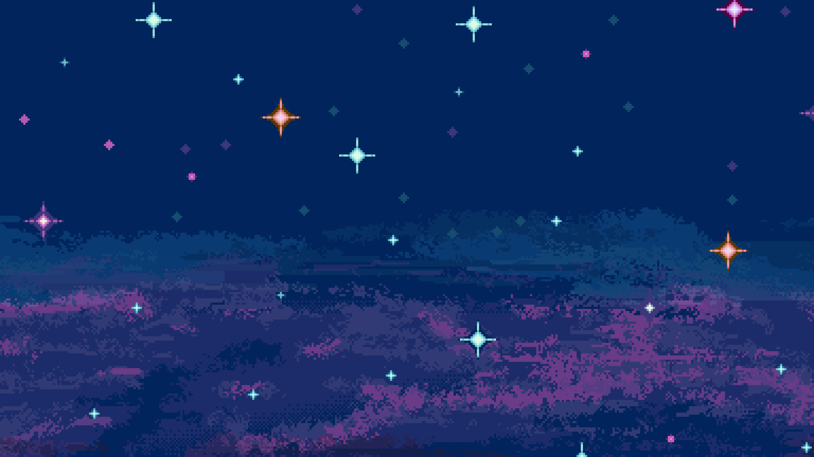

Pixel art & animation
Anime-style portraits, expressive sprites, looping animations, and detailed environmental scenes.
Loading, please wait...

The artist behind Coppters
Architect · Pixel Artist · Animator · Game Creator
I combine architectural thinking with a love of anime, games, and visual storytelling to create expressive characters and atmospheric pixel worlds.
01
My background in architecture shapes how I think about composition, space, lighting, and atmosphere.
Pixel art became the place where my interests naturally meet: structured design, anime-inspired characters, game environments, and animation. I enjoy turning a client’s idea into a scene that feels lived-in, memorable, and full of personality.
Alongside commission work, I explore coding and game development to make my art more interactive and bring original worlds to life.
02
Creative direction grounded in design, storytelling, and production experience.
Anime-style portraits, expressive sprites, looping animations, and detailed environmental scenes.
Strong perspective, spatial design, lighting, and environmental storytelling informed by professional architecture work.
Growing experience in coding and game creation, connecting artwork with playful interactive experiences.
03
Experience
Architecture experience with Archiart and AOA, alongside independent pixel-art commission work.
Languages
Working proficiency in Thai and English, with beginner-level Japanese and Spanish.
Inspired by
Final Fantasy, Dota 2, Jujutsu Kaisen, One Piece, Bleach, and the atmosphere of memorable game worlds.
Let’s create something memorable